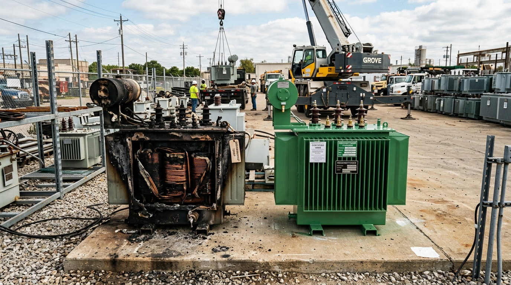

<!DOCTYPE html>
<html lang="en">
<head>
<!-- Google tag (gtag.js) -->
<script async src="https://www.googletagmanager.com/gtag/js?id=GT-MK4LGQ9D"></script>
<script>
  window.dataLayer = window.dataLayer || [];
  function gtag(){dataLayer.push(arguments);}
  gtag('js', new Date());

  gtag('config', 'GT-MK4LGQ9D');
</script>
<!-- Microsoft Clarity -->
<script type="text/javascript">
    (function(c,l,a,r,i,t,y){
        c[a]=c[a]||function(){(c[a].q=c[a].q||[]).push(arguments)};
        t=l.createElement(r);t.async=1;t.src="https://www.clarity.ms/tag/"+i;
        y=l.getElementsByTagName(r)[0];y.parentNode.insertBefore(t,y);
    })(window, document, "clarity", "script", "x1wrvodwit");
</script>
<meta charset="UTF-8">
<link rel="icon" type="image/png" href="/images/transfoline_logo-removebg-preview.png">
<link rel="apple-touch-icon" href="/images/transfoline_logo-removebg-preview.png">
<meta name="viewport" content="width=device-width, initial-scale=1.0">

<!-- Primary SEO -->
<title>Burnt Transformer: Rewind vs Buy Used Lahore Guide</title>
<meta name="description" content="Burnt transformer in Lahore? Comprehensive ROI decision guide comparing 72-hr rewinding vs instant certified-used WAPDA P-10 replacement from Raiwind yard.">
<meta name="keywords" content="repair vs replace transformer lahore, burnt transformer cost, used transformer replacement lahore, buy used transformer lahore, transformer rewinding vs replacement pakistan, burnt factory transformer what to do">
<meta name="robots" content="index, follow, max-snippet:-1, max-image-preview:large, max-video-preview:-1">
<meta name="author" content="TransfoLine Electrical Engineering Team">
<link rel="canonical" href="https://transfoline.com.pk/blog/burnt-transformer-repair-vs-used-replacement-lahore.html">

<!-- Geo / Regional -->
<meta name="geo.region" content="PK-PB">
<meta name="geo.placename" content="Lahore">
<meta name="geo.position" content="31.4504;74.3587">
<meta name="ICBM" content="31.4504, 74.3587">
<meta name="language" content="English">

<!-- Open Graph -->
<meta property="og:type" content="article">
<meta property="og:site_name" content="TransfoLine">
<meta property="og:title" content="Burnt Transformer: Should You Rewind or Buy a Certified-Used Unit in Lahore?">
<meta property="og:description" content="Burnt transformer in Lahore? Comprehensive ROI decision guide comparing 72-hr rewinding vs instant certified-used WAPDA P-10 replacement from Raiwind yard.">
<meta property="og:url" content="https://transfoline.com.pk/blog/burnt-transformer-repair-vs-used-replacement-lahore.html">
<meta property="og:image" content="https://transfoline.com.pk/images/transfoline-burnt-transformer-vs-used-replacement.jpg">
<meta property="og:locale" content="en_PK">
<meta property="article:published_time" content="2026-09-02T12:00:00+05:00">
<meta property="article:modified_time" content="2026-09-02T12:00:00+05:00">
<meta property="article:author" content="TransfoLine Electrical Engineering Team">
<meta property="article:section" content="Decision Guide">

<!-- Twitter Card -->
<meta name="twitter:card" content="summary_large_image">
<meta name="twitter:title" content="Burnt Transformer: Should You Rewind or Buy a Certified-Used Unit in Lahore?">
<meta name="twitter:description" content="Burnt transformer in Lahore? Comprehensive ROI decision guide comparing 72-hr rewinding vs instant certified-used WAPDA P-10 replacement from Raiwind yard.">
<meta name="twitter:image" content="https://transfoline.com.pk/images/transfoline-burnt-transformer-vs-used-replacement.jpg">

<!-- Structured Data: BlogPosting & FAQPage -->
<script type="application/ld+json">
{
  "@context": "https://schema.org",
  "@type": "BlogPosting",
  "mainEntityOfPage": {
    "@type": "WebPage",
    "@id": "https://transfoline.com.pk/blog/burnt-transformer-repair-vs-used-replacement-lahore.html"
  },
  "headline": "Burnt Transformer: Should You Rewind or Buy a Certified-Used Unit in Lahore?",
  "description": "Burnt transformer in Lahore? Comprehensive ROI decision guide comparing 72-hr rewinding vs instant certified-used WAPDA P-10 replacement from Raiwind yard.",
  "image": "https://transfoline.com.pk/images/transfoline-transformer-repair.webp",
  "author": {
    "@type": "Organization",
    "name": "TransfoLine Electrical Engineering Team",
    "url": "https://transfoline.com.pk"
  },
  "publisher": {
    "@type": "Organization",
    "name": "TransfoLine",
    "logo": {
      "@type": "ImageObject",
      "url": "https://transfoline.com.pk/images/transfoline-logo.webp"
    }
  },
  "datePublished": "2026-09-02T12:00:00+05:00",
  "dateModified": "2026-09-02T12:00:00+05:00"
}
</script>

<script type="application/ld+json">
{
  "@context": "https://schema.org",
  "@type": "FAQPage",
  "mainEntity": [
    {
      "@type": "Question",
      "name": "How do I know if my burnt transformer core is reusable?",
      "acceptedAnswer": {
        "@type": "Answer",
        "text": "During de-tanking at our workshop, our engineers inspect the silicon steel laminations for mechanical warping, localized hot-spot burning, and inter-laminar insulation melting. If lamination sheets are fused together or discolored into blue-black iron oxides, the core is ruined and cannot be rewound."
      }
    },
    {
      "@type": "Question",
      "name": "How much is my burnt transformer worth as scrap in Lahore?",
      "acceptedAnswer": {
        "@type": "Answer",
        "text": "A burnt transformer has substantial salvage value. The old copper coils can be sold at prevailing scrap market rates (typically PKR 2,200 to 2,500/kg), the CRGO core laminations fetch PKR 180 to 250/kg, and the structural steel tank fetches heavy scrap prices. TransfoLine credits this full value directly against your repair or replacement bill."
      }
    },
    {
      "@type": "Question",
      "name": "Can I get a certified-used transformer delivered on the same day in Lahore?",
      "acceptedAnswer": {
        "@type": "Answer",
        "text": "Yes. TransfoLine maintains over 50 fully tested, certified-used distribution transformers (50 kVA to 2500 kVA) in ready stock at our Raiwind Road yard. We can crane-deliver, rig onto your plinth, and energize within 12 to 24 hours of your order."
      }
    },
    {
      "@type": "Question",
      "name": "What is the warranty on a certified-used transformer from TransfoLine?",
      "acceptedAnswer": {
        "@type": "Answer",
        "text": "All certified-used transformers undergo full high-voltage test bay validation (turns ratio, winding resistance, Megger, and oil BDV &gt; 50 kV) conforming to WAPDA DDS-84 standards and come with a comprehensive 12-Month Replacement Warranty."
      }
    },
    {
      "@type": "Question",
      "name": "Which option is better for an old transformer built in 1995?",
      "acceptedAnswer": {
        "@type": "Answer",
        "text": "We strongly recommend replacing transformers older than 20 years. Vintage units have high core losses that waste over PKR 600,000 annually in excess electricity bills, and their tank steel is often weakened by corrosion. Replacing with a modern certified-used unit offers far superior long-term ROI."
      }
    }
  ]
}
</script>

<script type="application/ld+json">
{
  "@context": "https://schema.org",
  "@type": "BreadcrumbList",
  "itemListElement": [
    {"@type": "ListItem", "position": 1, "name": "Home", "item": "https://transfoline.com.pk/"},
    {"@type": "ListItem", "position": 2, "name": "Blog", "item": "https://transfoline.com.pk/blog.html"},
    {"@type": "ListItem", "position": 3, "name": "Burnt Transformer: Should You Rewind or Buy a Certified-Used Unit in Lahore?"}
  ]
}
</script>

<link rel="stylesheet" href="../styles.css">
</head>
<body>

<!-- ============ NAV ============ -->
<header class="nav" id="nav">
  <div class="sheet nav__in">
    <a href="../index.html" class="brand" aria-label="TransfoLine home">
      
    </a>
    <nav class="nav__links" aria-label="Primary">
      <a href="../index.html">Home</a>
      <a href="../index.html#why">Why Us</a>
      <div class="nav__dropdown">
        <a href="../index.html#services" class="nav__drop-trigger">Services <span class="nav__arrow">▾</span></a>
        <div class="nav__drop-menu mega-menu">
          <!-- COLUMN 1: TRANSFORMERS -->
          <div class="mega-col">
            <div class="mega-col__title">Transformers</div>
            <div class="mega-col__list">
              <a href="../new-used-transformers.html" class="mega-link">New &amp; Certified-Used Transformers</a>
              <a href="../solar-inverter-transformers-epc.html" class="mega-link">Solar Inverter Step-Up Transformers</a>
              <a href="../steel-furnace-transformers.html" class="mega-link">Steel Furnace Transformers (OFWF)</a>
              <a href="../dry-type-cast-resin-transformers.html" class="mega-link">Cast Resin Dry-Type Transformers</a>
              <a href="../high-voltage-power-transformers.html" class="mega-link">High-Voltage Power Transformers (MVA)</a>
              <a href="../spare-parts.html" class="mega-link">Transformer Spare Parts &amp; Supplies</a>
            </div>
          </div>

          <!-- COLUMN 2: ENGINEERING SERVICES -->
          <div class="mega-col">
            <div class="mega-col__title">Engineering Services</div>
            <div class="mega-col__list">
              <a href="../turnkey-substation-epc.html" class="mega-link">Turnkey Substation EPC (11kV/132kV)</a>
              <a href="../transformer-repair.html" class="mega-link">Transformer Repair &amp; Rewinding</a>
              <a href="../transformer-repair-lahore.html" class="mega-link" style="color:var(--accent-ink);font-weight:600;">Transformer Repair Lahore (24/7) ★</a>
              <a href="../oil-dehydration.html" class="mega-link">Oil Dehydration &amp; BDV Filtration</a>
              <a href="../preventive-maintenance-amc.html" class="mega-link">Maintenance &amp; AMC Contracts</a>
              <a href="../ht-lt-panel-installation.html" class="mega-link">HT / LT Panel Installation</a>
            </div>
          </div>

          <!-- COLUMN 3: SOLAR & RENEWABLE -->
          <div class="mega-col">
            <div class="mega-col__title">Solar &amp; Renewable</div>
            <div class="mega-col__list">
              <a href="../solar-energy-solutions.html" class="mega-link">Commercial &amp; Industrial Solar EPC</a>
              <a href="../solar-panels-inverters-cables.html" class="mega-link">Solar Hardware (Panels, Inverters, Cables)</a>
              <a href="../100kw-solar-system-price-pakistan.html" class="mega-link">100 kW Commercial System</a>
              <a href="../500kw-industrial-solar-system.html" class="mega-link">500 kW Industrial Substation</a>
              <a href="../1mw-solar-power-plant-pakistan.html" class="mega-link">1 MW to 5 MW Solar Power Plants</a>
              <a href="../ev-charging-solutions-pakistan.html" class="mega-link">Commercial EV Fast Charging</a>
            </div>
          </div>

          <!-- COLUMN 4: TESTING & DIAGNOSTICS -->
          <div class="mega-col">
            <div class="mega-col__title">Testing &amp; Diagnostics</div>
            <div class="mega-col__list">
              <a href="../insulation-resistance-testing.html" class="mega-link">Insulation Resistance Testing (Megger)</a>
              <a href="../transformer-testing.html" class="mega-link">Transformer Diagnostic Testing (DGA)</a>
              <a href="../high-voltage-testing.html" class="mega-link">High Voltage (Hipot) Testing</a>
              <a href="../protection-relay-testing.html" class="mega-link">Protection Relay Testing</a>
              <a href="../thermal-imaging.html" class="mega-link">Thermal Imaging Inspection (FLIR)</a>
              <a href="../circuit-breaker-testing.html" class="mega-link">Circuit Breaker Testing</a>
            </div>
          </div>
        </div>
      </div>
      <a href="../calculators.html">Calculators</a>
      <a href="../index.html#process">Process</a>
      <a href="../index.html#faq">FAQ</a>
      <a href="../contact-us.html">Contact</a>
    </nav>
    <div class="nav__right">
      <a href="tel:+923144641288" class="nav__tel"><span class="sq" aria-hidden="true"></span>0314 4641288</a>
      <a href="../contact-us.html" class="btn btn--solid btn--sm">Get Quote</a>
      <button class="nav__burger" id="burger" aria-label="Menu" aria-expanded="false"><span></span><span></span><span></span></button>
    </div>
  </div>

  <!-- Mobile Menu Drawer -->
  <div class="nav__mobile" id="mobileMenu">
    <div class="nav__mobile-quick">
      <a href="../index.html" class="nav__mobile-item">Home</a>
      <a href="../index.html#why" class="nav__mobile-item">Why Us</a>
      <a href="../calculators.html" class="nav__mobile-item nav__mobile-item--featured">
        <span>⚡ Engineering Calculators</span>
        <span class="nav__mobile-pill">Interactive</span>
      </a>
      <a href="../blog.html" class="nav__mobile-item">📰 Blog &amp; Knowledge Hub</a>
    </div>

    <div class="nav__mobile-section-title">Services &amp; Equipment</div>
    <div class="nav__mob-accordion">
      <button class="nav__mob-acc-trigger" aria-expanded="false">
        <span class="nav__mob-acc-title">
          <span class="nav__mob-acc-icon">⚡</span>
          <span>Transformers</span>
        </span>
        <span class="nav__mob-acc-badge">6 Products <span class="nav__mob-arrow">▾</span></span>
      </button>
      <div class="nav__mob-acc-panel">
        <a href="../new-used-transformers.html">New &amp; Certified-Used Transformers</a>
        <a href="../solar-inverter-transformers-epc.html">Solar Inverter Step-Up Transformers</a>
        <a href="../steel-furnace-transformers.html">Steel Furnace Transformers (OFWF)</a>
        <a href="../dry-type-cast-resin-transformers.html">Cast Resin Dry-Type Transformers</a>
        <a href="../high-voltage-power-transformers.html">High-Voltage Power Transformers (MVA)</a>
        <a href="../spare-parts.html">Transformer Spare Parts &amp; Supplies</a>
      </div>
    </div>

    <div class="nav__mob-accordion">
      <button class="nav__mob-acc-trigger" aria-expanded="true">
        <span class="nav__mob-acc-title">
          <span class="nav__mob-acc-icon">🛠️</span>
          <span>Engineering Services</span>
        </span>
        <span class="nav__mob-acc-badge">6 Services <span class="nav__mob-arrow">▾</span></span>
      </button>
      <div class="nav__mob-acc-panel">
        <a href="../transformer-repair-lahore.html" style="font-weight:700;color:var(--accent-ink);">Transformer Repair Lahore (24/7) ★</a>
        <a href="../transformer-repair.html">National Transformer Repair &amp; Rewinding</a>
        <a href="../turnkey-substation-epc.html">Turnkey Substation EPC (11kV/132kV)</a>
        <a href="../oil-dehydration.html">Oil Dehydration &amp; BDV Filtration</a>
        <a href="../preventive-maintenance-amc.html">Maintenance &amp; AMC Contracts</a>
        <a href="../ht-lt-panel-installation.html">HT / LT Panel Installation</a>
      </div>
    </div>

    <div class="nav__mob-accordion">
      <button class="nav__mob-acc-trigger" aria-expanded="false">
        <span class="nav__mob-acc-title">
          <span class="nav__mob-acc-icon">☀️</span>
          <span>Solar &amp; Renewable</span>
        </span>
        <span class="nav__mob-acc-badge">6 Solutions <span class="nav__mob-arrow">▾</span></span>
      </button>
      <div class="nav__mob-acc-panel">
        <a href="../solar-energy-solutions.html">Commercial &amp; Industrial Solar EPC</a>
        <a href="../solar-panels-inverters-cables.html">Solar Hardware (Panels, Inverters, Cables)</a>
        <a href="../100kw-solar-system-price-pakistan.html">100 kW Commercial Solar System</a>
        <a href="../500kw-industrial-solar-system.html">500 kW Industrial Substation</a>
        <a href="../1mw-solar-power-plant-pakistan.html">1 MW to 5 MW Solar Power Plants</a>
        <a href="../ev-charging-solutions-pakistan.html">Commercial EV Fast-Charging Stations</a>
      </div>
    </div>

    <div class="nav__mob-accordion">
      <button class="nav__mob-acc-trigger" aria-expanded="false">
        <span class="nav__mob-acc-title">
          <span class="nav__mob-acc-icon">🔬</span>
          <span>Testing &amp; Diagnostics</span>
        </span>
        <span class="nav__mob-acc-badge">6 Tests <span class="nav__mob-arrow">▾</span></span>
      </button>
      <div class="nav__mob-acc-panel">
        <a href="../insulation-resistance-testing.html">Insulation Resistance Testing (Megger)</a>
        <a href="../transformer-testing.html">Transformer Diagnostic Testing (DGA)</a>
        <a href="../high-voltage-testing.html">High Voltage (Hipot) Testing</a>
        <a href="../protection-relay-testing.html">Protection Relay Testing</a>
        <a href="../thermal-imaging.html">Thermal Imaging Inspection (FLIR)</a>
        <a href="../circuit-breaker-testing.html">Circuit Breaker Testing</a>
      </div>
    </div>

    <div class="nav__mobile-contact">
      <a href="tel:+923144641288" class="nav__mobile-call"><span class="nav__mobile-call-icon"><svg viewBox="0 0 24 24" fill="none"><path d="M6.62 10.79a15.05 15.05 0 0 0 6.59 6.59l2.2-2.2a1 1 0 0 1 1.01-.24c1.12.37 2.33.57 3.58.57a1 1 0 0 1 1 1V20a1 1 0 0 1-1 1A17 17 0 0 1 3 4a1 1 0 0 1 1-1h3.5a1 1 0 0 1 1 1c0 1.25.2 2.46.57 3.58a1 1 0 0 1-.24 1.01l-2.2 2.2Z" fill="currentColor"/></svg></span>Emergency Call: 0314 4641288</a>
    </div>
  </div>
</header>

<main id="main">
  <!-- Breadcrumb -->
  <div class="sheet">
    <nav class="breadcrumb" aria-label="Breadcrumb">
      <a href="../index.html">Home</a>
      <span class="breadcrumb__sep" aria-hidden="true">/</span>
      <a href="../blog.html">Blog</a>
      <span class="breadcrumb__sep" aria-hidden="true">/</span>
      <span aria-current="page">Burnt Transformer: Rewind or Buy Certified-Used in Lahore? (ROI Guide)</span>
    </nav>
  </div>

  <!-- ============ POST HERO ============ -->
  <section class="post-hero">
    <div class="sheet">
      <div class="post-hero__top">
        <div class="post-hero__meta">
          <span class="blog-card__cat">Decision Guide</span>
          <span class="blog-card__date">September 2, 2026</span>
          <span class="blog-card__date">15 min read</span>
        </div>
        <h1 style="font-family:var(--cond);font-weight:600;font-size:clamp(30px,4vw,50px);line-height:1.06;letter-spacing:-.01em;max-width:28ch;">Burnt Transformer: Rewind or Buy <em>Certified-Used</em> in Lahore? (ROI Guide)</h1>
        <p class="svc-hero__sub" style="margin-top:20px;">When an industrial transformer suffers a catastrophic burnout in Lahore, factory owners and CFOs face a high-stakes crossroads: Should you invest PKR 400,000 to PKR 900,000 in workshop coil rewinding, or should you immediately purchase a certified-used WAPDA P-10 replacement from Raiwind Road? This comprehensive financial and engineering decision matrix analyzes real capital costs, production downtime penalties, energy efficiency losses, and warranty coverage to help you choose the most profitable path.</p>
      </div>
    </div>
    <div class="post-hero__banner">
      
    </div>
  </section>

  <!-- ============ POST BODY ============ -->
  <article class="post-body">
    <!-- Table of Contents -->
    <nav class="post-toc" aria-label="Table of contents">
      <div class="post-toc__title">In This Engineering Guide</div>
      <ol>
        <li><a href="#the-post-burnout-dilemma">The Post-Burnout Dilemma: Cash Outlay vs. Production Downtime</a></li>
        <li><a href="#technical-audit-salvageability">Technical Audit: Is Your Burnt Transformer Truly Rewindable?</a></li>
        <li><a href="#cost-comparison-matrix">Direct Cost Comparison: Rewinding vs. Certified-Used vs. Brand New</a></li>
        <li><a href="#downtime-loss-calculation">Downtime Calculations: Why Speed Beats Material Cost Savings</a></li>
        <li><a href="#energy-efficiency-losses">Energy Efficiency &amp; Core Losses: The Hidden Electricity Bill Penalty</a></li>
        <li><a href="#warranty-risk-management">Warranty &amp; Risk: 12-Month Service Guarantee vs. Full Replacement</a></li>
        <li><a href="#decision-flowchart">The 5-Step Factory Executive Decision Flowchart</a></li>

        <li><a href="#faq">Frequently Asked Questions</a></li>
      </ol>
    </nav>

    <!-- Visual Demonstration Plate 1 -->
    <figure style="margin:28px 0;">
      
      <figcaption style="font-family:var(--mono);font-size:12px;color:var(--ink-3);margin-top:8px;">Figure 1: De-tanking, core inspection, and 99.99% pure electrolytic copper coil rewinding at TransfoLine workshop, Lahore.</figcaption>
    </figure>


  <!-- Section 1 -->
  <h2 id="the-post-burnout-dilemma">The Post-Burnout Dilemma: Cash Outlay vs. Production Downtime</h2>
  <p>The smell of burnt transformer oil and charred insulation paper is unmistakable. When an 11kV substation breaker trips and refuses to reset, the plant manager delivers the grim news: <em>"The transformer has burnt out."</em></p>

  <p>For factory executives in Lahore's industrial centers (Sundar, Kot Lakhpat, Multan Road, Sheikhupura), the panic of a sudden shutdown often clouds financial judgment. Many owners immediately choose the cheapest upfront quote—usually rewinding the damaged coils at an informal workshop. However, when every 24 hours of factory shutdown burns PKR 500,000 to PKR 2,000,000 in unrecoverable operational losses, saving PKR 200,000 on repair while waiting 5 days for delivery is a catastrophic financial mistake.</p>

  <p>To make the optimal commercial decision, executives must evaluate three distinct pathways:</p>
  <ol>
    <li><strong>Workshop Precision Rewinding:</strong> Rebuilding damaged HT/LT coils with 99.99% pure electrolytic copper while preserving the original core and tank.</li>
    <li><strong>Certified-Used WAPDA P-10 Replacement:</strong> Immediate delivery of an in-stock, factory-tested, refurbished transformer from TransfoLine's Raiwind Road yard with same-day energization.</li>
    <li><strong>Brand-New Factory Transformer:</strong> Ordering a brand-new unit from primary manufacturers (PEL, Siemens, Transfopower) with lead times spanning 6 to 12 weeks.</li>
  </ol>

  <!-- Section 2 -->
  <h2 id="technical-audit-salvageability">Technical Audit: Is Your Burnt Transformer Truly Rewindable?</h2>
  <p>Not all burnt transformers can or should be rewound. Before committing capital to rewinding, TransfoLine engineers execute a forensic de-tanking inspection at our Raiwind Road facility to evaluate core viability:</p>

  <table style="width:100%;border-collapse:collapse;margin:24px 0;font-size:14px;">
    <thead>
      <tr style="background:var(--bg-card);border-bottom:2px solid var(--rule);">
        <th style="padding:12px;text-align:left;">Component Inspection</th>
        <th style="padding:12px;text-align:left;">Rewindable (Repair Recommended)</th>
        <th style="padding:12px;text-align:left;">Unsalvageable (Replacement Mandatory)</th>
      </tr>
    </thead>
    <tbody>
      <tr style="border-bottom:1px solid var(--rule);">
        <td style="padding:10px;"><strong>CRGO Silicon Steel Core</strong></td>
        <td style="padding:10px;color:#16a34a;">Core laminations flat, zero melting, unburned Carlite coating</td>
        <td style="padding:10px;color:#dc2626;font-weight:600;">Laminations fused/melted by high-energy arc, warped limbs</td>
      </tr>
      <tr style="border-bottom:1px solid var(--rule);">
        <td style="padding:10px;"><strong>Structural Steel Tank</strong></td>
        <td style="padding:10px;color:#16a34a;">Tank walls intact, zero bulging, minor gasket weepage</td>
        <td style="padding:10px;color:#dc2626;font-weight:600;">Ruptured explosion vent, bulging tank, internal seam tears</td>
      </tr>
      <tr style="border-bottom:1px solid var(--rule);">
        <td style="padding:10px;"><strong>Tap Changer Mechanism</strong></td>
        <td style="padding:10px;color:#16a34a;">Minor contact carbon, spring tension intact</td>
        <td style="padding:10px;color:#dc2626;font-weight:600;">Melted selector contacts, broken shaft, flashover damage</td>
      </tr>
      <tr style="border-bottom:1px solid var(--rule);">
        <td style="padding:10px;"><strong>Core Clamping &amp; Yoke</strong></td>
        <td style="padding:10px;color:#16a34a;">Tie-bolts straight, insulation washers serviceable</td>
        <td style="padding:10px;color:#dc2626;font-weight:600;">Structural tie-rods sheared by massive short-circuit forces</td>
      </tr>
    </tbody>
  </table>

  <p><strong>The Core Rule:</strong> If the magnetic silicon steel core has melted or fused, rewinding is impossible. Re-laminating melted CRGO steel increases no-load iron losses by 300%, causing the transformer to overheat and burn out within weeks of re-commissioning. In such cases, purchasing a certified-used unit is the only viable option.</p>

  <!-- Section 3 -->
  <h2 id="cost-comparison-matrix">Direct Cost Comparison: Rewinding vs. Certified-Used vs. Brand New</h2>
  <p>Here is an empirical financial comparison for a typical 630 kVA 11kV/415V distribution substation transformer in Lahore (2026 market benchmarks):</p>

  <table style="width:100%;border-collapse:collapse;margin:24px 0;font-size:14px;">
    <thead>
      <tr style="background:var(--bg-card);border-bottom:2px solid var(--rule);">
        <th style="padding:12px;text-align:left;">Metric (630 kVA Rating)</th>
        <th style="padding:12px;text-align:left;">Option 1: Complete Rewinding</th>
        <th style="padding:12px;text-align:left;">Option 2: Certified-Used Unit</th>
        <th style="padding:12px;text-align:left;">Option 3: Brand-New Unit</th>
      </tr>
    </thead>
    <tbody>
      <tr style="border-bottom:1px solid var(--rule);">
        <td style="padding:10px;"><strong>Upfront Purchase / Repair Cost</strong></td>
        <td style="padding:10px;color:#16a34a;font-weight:600;">PKR 650,000 – 780,000</td>
        <td style="padding:10px;font-weight:600;">PKR 1,450,000 – 1,750,000</td>
        <td style="padding:10px;color:#dc2626;font-weight:600;">PKR 2,800,000 – 3,400,000</td>
      </tr>
      <tr style="border-bottom:1px solid var(--rule);">
        <td style="padding:10px;"><strong>Scrap Copper Buyback Credit</strong></td>
        <td style="padding:10px;color:#16a34a;">- PKR 300,000 to 380,000</td>
        <td style="padding:10px;color:#16a34a;">- PKR 400,000 (Trade-in old unit)</td>
        <td style="padding:10px;">PKR 0 (Must sell scrap separately)</td>
      </tr>
      <tr style="border-bottom:1px solid var(--rule);">
        <td style="padding:10px;"><strong>Net Cash Outlay (After Scrap)</strong></td>
        <td style="padding:10px;color:#16a34a;font-weight:700;">PKR 350,000 – 420,000</td>
        <td style="padding:10px;font-weight:700;">PKR 1,050,000 – 1,350,000</td>
        <td style="padding:10px;color:#dc2626;font-weight:700;">PKR 2,800,000 – 3,400,000</td>
      </tr>
      <tr style="border-bottom:1px solid var(--rule);">
        <td style="padding:10px;"><strong>Delivery &amp; Energization Speed</strong></td>
        <td style="padding:10px;">48 to 72 Hours (or loaner)</td>
        <td style="padding:10px;color:#16a34a;font-weight:700;">12 to 24 Hours (Same Day)</td>
        <td style="padding:10px;color:#dc2626;font-weight:700;">6 to 10 Weeks (Factory queue)</td>
      </tr>
      <tr style="border-bottom:1px solid var(--rule);">
        <td style="padding:10px;"><strong>Warranty Protection</strong></td>
        <td style="padding:10px;">12-Month Service Warranty</td>
        <td style="padding:10px;color:#16a34a;">12-Month Full Replacement</td>
        <td style="padding:10px;color:#16a34a;">12-Month Factory Warranty</td>
      </tr>
    </tbody>
  </table>

  <!-- Section 4 -->
  <h2 id="downtime-loss-calculation">Downtime Calculations: Why Speed Beats Material Cost Savings</h2>
  <p>To visualize why the fastest option is often the most economical, examine the total financial impact on a textile mill in Kot Lakhpat losing PKR 400,000 per hour during an unplanned blackout:</p>
  <ul>
    <li><strong>Scenario A (Waiting 4 days for cheap rewinding):</strong> 96 hours of downtime $	imes 	ext{PKR } 400,000 = 	ext{f PKR 38,400,000}$ in production loss + PKR 400,000 repair bill = <strong>Total Loss: PKR 38.8 Million!</strong></li>
    <li><strong>Scenario B (Same-day certified-used swap from TransfoLine):</strong> 12 hours total downtime until energization $	imes 	ext{PKR } 400,000 = 	ext{f PKR 4,800,000}$ in production loss + PKR 1,100,000 net equipment cost = <strong>Total Loss: PKR 5.9 Million!</strong></li>
    <li><strong>Scenario C (Rewinding with TransfoLine Standby Loaner deployed on Day 1):</strong> 8 hours downtime until loaner energized $= 	ext{f PKR 3,200,000}$ in production loss + PKR 420,000 net rewinding bill + PKR 80,000 loaner logistics = <strong>Total Loss: PKR 3.7 Million!</strong></li>
  </ul>
  <p><em>Notice that Scenario C (Rewinding combined with an immediate Standby Loaner Unit) yields the absolute lowest net economic loss for the factory!</em></p>

  <!-- Section 5 -->
  <h2 id="energy-efficiency-losses">Energy Efficiency &amp; Core Losses: The Hidden Electricity Bill Penalty</h2>
  <p>When choosing between rewinding an old 1998-vintage transformer versus replacing it with a modern certified-used 2020 unit, factory managers must consider recurring LESCO electricity tariffs.</p>

  <p>Transformers consume electricity 24 hours a day, 365 days a year, even when factory machinery is completely turned off (no-load core loss, $P_0$). Older transformers built with thick, un-annealed silicon steel laminations waste 2,800 Watts in continuous iron losses. Modern laser-scribed, high-permeability CRGO cores waste only 1,100 Watts.</p>
  <div style="background:var(--bg-card);padding:18px;border-left:4px solid var(--accent);margin:20px 0;">
    <p style="margin:0;font-size:14px;color:var(--ink);line-height:1.7;">
      <strong>The Annual Core Loss Penalty:</strong><br>
      Difference in continuous no-load power: $2.8	ext{ kW} - 1.1	ext{ kW} = 1.7	ext{ kW}$<br>
      Annual wasted energy: $1.7	ext{ kW} 	imes 8,760	ext{ hours/year} = 14,892	ext{ kWh (units)}$<br>
      At an industrial LESCO B3 tariff of approximately PKR 45 per unit, operating the vintage rewound core wastes <strong>PKR 670,140 every single year</strong> in wasted iron losses! Over 5 years, purchasing a modern certified-used unit completely pays for itself purely in electricity bill savings.
    </p>
  </div>

  <!-- Section 6 -->
  <h2 id="warranty-risk-management">Warranty &amp; Risk: 12-Month Service Guarantee vs. Full Replacement</h2>
  <p>A rewinding warranty and a replacement warranty provide different operational protections:</p>
  <ul>
    <li><strong>Rewinding Service Warranty (12 Months):</strong> Covers the new copper coils, layer insulation, and workmanship. If an internal winding fault reoccurs, the repair company will re-open and repair the coils at zero labor cost. However, it does not cover external tank ruptures, pre-existing core fatigue, or bushing flashovers caused by external grid surges.</li>
    <li><strong>Certified-Used Full Replacement Warranty (12 Months):</strong> If the transformer suffers an unresolvable internal fault during the warranty period, TransfoLine delivers a replacement transformer directly to your plinth. This provides total balance-sheet peace of mind for mission-critical industrial continuous processes.</li>
  </ul>

  <!-- Section 7 -->
  <h2 id="decision-flowchart">The 5-Step Factory Executive Decision Flowchart</h2>
  <p>Follow this standardized rule of thumb when your substation transformer fails:</p>
  <ol>
    <li><strong>Is the core damaged or tank bulging?</strong> If YES $
ightarrow$ Immediately purchase a Certified-Used Unit. Do not attempt rewinding.</li>
    <li><strong>Is production downtime loss &gt; PKR 500,000 per day?</strong> If YES $
ightarrow$ Deploy an Emergency Standby Loaner Unit within 12 hours, then rewind your unit at leisure, OR execute a permanent Same-Day Used Swap.</li>
    <li><strong>Is the transformer less than 12 years old with intact core?</strong> If YES $
ightarrow$ Rewind with 99.99% pure electrolytic copper wire to save 60% compared to new capital expenditure.</li>
    <li><strong>Is the transformer older than 20 years with high core losses?</strong> If YES $
ightarrow$ Retire the unit, claim scrap value, and upgrade to a modern energy-efficient certified-used transformer.</li>
    <li><strong>Call TransfoLine Hotline (0314 4641288):</strong> Our high-voltage engineers will inspect your burnt unit on-site in Lahore within 2 hours and provide transparent side-by-side cost options.</li>
  </ol>


    <!-- Visual Demonstration Plate 2 -->
    <figure style="margin:28px 0;">
      
      <figcaption style="font-family:var(--mono);font-size:12px;color:var(--ink-3);margin-top:8px;">Figure 2: Ready-to-dispatch standby loaner distribution transformers at our Raiwind Road yard (50 kVA to 2500 kVA).</figcaption>
    </figure>

    <!-- ============ FAQ SECTION ============ -->
    <h2 id="faq">Frequently Asked Questions</h2>
    <div class="faq-grid" id="faqList" style="margin-top:20px;">
      <details class="faq">
        <summary>
          <span class="faq__c">FAQ</span>
          How do I know if my burnt transformer core is reusable?
          <span class="faq__s"></span>
        </summary>
        <p class="faq__a">During de-tanking at our workshop, our engineers inspect the silicon steel laminations for mechanical warping, localized hot-spot burning, and inter-laminar insulation melting. If lamination sheets are fused together or discolored into blue-black iron oxides, the core is ruined and cannot be rewound.</p>
      </details>
      <details class="faq">
        <summary>
          <span class="faq__c">FAQ</span>
          How much is my burnt transformer worth as scrap in Lahore?
          <span class="faq__s"></span>
        </summary>
        <p class="faq__a">A burnt transformer has substantial salvage value. The old copper coils can be sold at prevailing scrap market rates (typically PKR 2,200 to 2,500/kg), the CRGO core laminations fetch PKR 180 to 250/kg, and the structural steel tank fetches heavy scrap prices. TransfoLine credits this full value directly against your repair or replacement bill.</p>
      </details>
      <details class="faq">
        <summary>
          <span class="faq__c">FAQ</span>
          Can I get a certified-used transformer delivered on the same day in Lahore?
          <span class="faq__s"></span>
        </summary>
        <p class="faq__a">Yes. TransfoLine maintains over 50 fully tested, certified-used distribution transformers (50 kVA to 2500 kVA) in ready stock at our Raiwind Road yard. We can crane-deliver, rig onto your plinth, and energize within 12 to 24 hours of your order.</p>
      </details>
      <details class="faq">
        <summary>
          <span class="faq__c">FAQ</span>
          What is the warranty on a certified-used transformer from TransfoLine?
          <span class="faq__s"></span>
        </summary>
        <p class="faq__a">All certified-used transformers undergo full high-voltage test bay validation (turns ratio, winding resistance, Megger, and oil BDV &gt; 50 kV) conforming to WAPDA DDS-84 standards and come with a comprehensive 12-Month Replacement Warranty.</p>
      </details>
      <details class="faq">
        <summary>
          <span class="faq__c">FAQ</span>
          Which option is better for an old transformer built in 1995?
          <span class="faq__s"></span>
        </summary>
        <p class="faq__a">We strongly recommend replacing transformers older than 20 years. Vintage units have high core losses that waste over PKR 600,000 annually in excess electricity bills, and their tank steel is often weakened by corrosion. Replacing with a modern certified-used unit offers far superior long-term ROI.</p>
      </details>

    </div>

    <!-- ============ POST AUTHOR BOX ============ -->
    <div class="post-author" style="margin-top:40px;padding:24px;border:1px solid var(--rule);border-radius:6px;background:var(--bg-card);display:flex;gap:20px;align-items:center;">
      
      <div>
        <h4 style="margin:0 0 6px;font-size:16px;">TransfoLine Electrical Engineering Team</h4>
        <p style="margin:0;font-size:13px;color:var(--ink-2);line-height:1.5;">Specialized in industrial high-voltage substations, transformer rewinding, and power quality diagnostics across Pakistan. Based on Raiwind Road, Lahore with 18+ years of field experience and 10,000+ energized installations.</p>
      </div>
    </div>

    <!-- Emergency Callout Box -->
    <div style="margin-top:30px;padding:24px;background:#fef2f2;border:1px solid #f87171;border-radius:6px;text-align:center;">
      <h3 style="color:#b91c1c;margin:0 0 8px;font-size:20px;">Urgent Transformer Breakdown in Lahore?</h3>
      <p style="color:#7f1d1d;font-size:14px;margin:0 0 16px;">Our emergency mobile testing team arrives on-site in Sundar, Kot Lakhpat, Multan Road, or Sheikhupura within 2 to 4 hours. Standby loaner transformers available.</p>
      <div style="display:flex;gap:12px;justify-content:center;flex-wrap:wrap;">
        <a href="tel:+923144641288" class="btn btn--solid" style="background:#dc2626;border-color:#dc2626;color:#fff;">Call Hotline: 0314 4641288 <span class="ar">→</span></a>
        <a href="../transformer-repair-lahore.html" class="btn btn--ghost" style="color:#b91c1c;border-color:#f87171;">View Lahore Workshop Services <span class="ar">→</span></a>
      </div>
    </div>
  </article>

<!-- ============ GET IN TOUCH (EXACT LANDING PAGE ARCHITECTURE) ============ -->
<section class="section" id="contact">
  <div class="sheet section__pad">
    <div class="shead reveal">
      <span class="shead__ix">06</span>
      <div class="shead__t">
        <span class="lab"><span class="dot" aria-hidden="true"></span>&nbsp;&nbsp;Get In Touch</span>
        <h2 class="h2">Get a wholesale quote in minutes.</h2>
      </div>
    </div>
    <div class="c-grid reveal">
      <div class="c-info">
        <p class="lede" style="margin-top:0;">Tell us what you need. Our engineering team replies within two hours, Monday to Saturday (24/7 for emergency repairs in Lahore).</p>
        <div class="c-reg">
          <a href="tel:+923144641288"><span class="k">Phone</span><span class="v">0314 4641288</span></a>
          <a href="mailto:info@transfoline.com.pk"><span class="k">Email</span><span class="v">info@transfoline.com.pk</span></a>
          <a href="https://maps.google.com/?q=Raiwind+Road+Lahore" target="_blank" rel="noopener"><span class="k">Address</span><span class="v">Raiwind Road, Lahore</span></a>
          <span class="c-reg__row"><span class="k">Hours</span><span class="v">Mon–Sat · 9 AM–6 PM (24/7 Emergency)</span></span>
        </div>
      </div>
      <form class="form" id="quoteForm" action="https://formspree.io/f/xnjyqoek" method="POST" novalidate>
        <div class="form__inner">
          <h3>Request a quote</h3>
          <p class="sub">Reply within 2 hours</p>
          <div class="two">
            <div class="field"><label>Name <span class="req">*</span></label><input type="text" name="name" autocomplete="name"><div class="msg">Please enter your name.</div></div>
            <div class="field"><label>Company</label><input type="text" name="company" autocomplete="organization"></div>
          </div>
          <div class="two">
            <div class="field"><label>Phone <span class="req">*</span></label><input type="tel" name="phone" inputmode="tel" placeholder="03XX XXXXXXX"><div class="msg">Enter an 11-digit phone number.</div></div>
            <div class="field"><label>Quantity / Capacity</label><input type="text" name="qty" placeholder="e.g. 630 kVA"></div>
          </div>
          <div class="field"><label>What do you need? <span class="req">*</span></label>
            <select name="service">
              <option value="">Select a service…</option>
              <option selected>Transformer repair (Lahore)</option>
              <option>Emergency rewinding (24/7)</option>
              <option>Standby loaner transformer</option>
              <option>Oil dehydration &amp; BDV filtration</option>
              <option>New transformer</option>
              <option>Used transformer</option>
            </select><div class="msg">Please choose a service.</div>
          </div>
          <div class="field"><label>Details</label><textarea name="details" placeholder="KVA rating, fault symptoms, factory location in Lahore…"></textarea></div>
          <button type="submit" class="btn btn--solid">Send Request <span class="ar">→</span></button>
        </div>
        <div class="form__ok">
          <div class="mk">✓ Request received</div>
          <h3>Thank you.</h3>
          <p>Our team will call you within two hours. For anything urgent, call 0314 4641288.</p>
        </div>
      </form>
    </div>
  </div>
</section>
</main>

<!-- ============ FOOTER (AUTHENTIC TRANSFOLINE BALANCED MASTER ARCHITECTURE) ============ -->
<footer class="footer">
  <div class="sheet">
    <!-- FOOTER TOP: BRAND, DIRECT CONTACT & SOCIALS -->
    <div class="footer__top">
      <div class="footer__brand-box">
        <a href="../index.html#top" class="brand"></a>
        <p>TransfoLine (Private) Limited — Pakistan's premier turnkey industrial solar EPC contractor, high-voltage substation manufacturer, and certified testing specialist since 2008.</p>
      </div>
      <div class="footer__top-contact">
        <div class="footer__direct-links">
          <a href="tel:+923144641288" class="footer__c-item"><span class="sq"></span> 0314 4641288</a>
          <a href="mailto:info@transfoline.com.pk" class="footer__c-item"><span class="sq"></span> info@transfoline.com.pk</a>
          <span class="footer__c-item"><span class="sq"></span> Raiwind Road, Lahore</span>
        </div>
        <div class="footer__socials">
          <a href="https://pk.linkedin.com/company/transfoline" target="_blank" rel="noopener"><svg width="14" height="14" viewBox="0 0 24 24" fill="currentColor"><path d="M19 3a2 2 0 0 1 2 2v14a2 2 0 0 1-2 2H5a2 2 0 0 1-2-2V5a2 2 0 0 1 2-2h14m-.5 15.5v-5.3a3.26 3.26 0 0 0-3.26-3.26c-.85 0-1.84.52-2.28 1.3v-1.11h-2.79v8.37h2.79v-4.93c0-.77.62-1.4 1.39-1.4a1.4 1.4 0 0 1 1.4 1.4v4.93h2.75M6.46 10.9v8.37H9.2V10.9H6.46M7.83 6.45a1.6 1.6 0 0 0-1.6 1.6 1.6 1.6 0 0 0 1.6 1.6 1.6 1.6 0 0 0 1.6-1.6c0-.89-.71-1.6-1.6-1.6Z"/></svg> LinkedIn</a>
          <a href="https://www.facebook.com/p/Transfo-Line-100089514231981/" target="_blank" rel="noopener"><svg width="14" height="14" viewBox="0 0 24 24" fill="currentColor"><path d="M12 2.04c-5.5 0-10 4.49-10 10.02 0 5 3.66 9.15 8.44 9.9v-7H7.9v-2.9h2.54V9.85c0-2.51 1.49-3.89 3.78-3.89 1.09 0 2.23.19 2.23.19v2.47h-1.26c-1.24 0-1.63.77-1.63 1.56v1.88h2.78l-.45 2.9h-2.33v7a10 10 0 0 0 8.44-9.9c0-5.53-4.5-10.02-10-10.02Z"/></svg> Facebook</a>
          <span class="stat-tag is-ok">24/7 Support</span>
        </div>
      </div>
    </div>

    <!-- MAIN 4 EQUAL-HEIGHT COLUMNS -->
    <div class="footer__grid">
      <!-- COLUMN 1: TRANSFORMERS -->
      <div class="footer__col">
        <h4>Transformers</h4>
        <div class="footer__links">
          <a href="../new-used-transformers.html">New &amp; Certified-Used</a>
          <a href="../solar-inverter-transformers-epc.html">Solar Step-Up Transformers</a>
          <a href="../steel-furnace-transformers.html">Steel Furnace Transformers (OFWF)</a>
          <a href="../dry-type-cast-resin-transformers.html">Cast Resin Dry-Type</a>
          <a href="../high-voltage-power-transformers.html">High-Voltage Power (MVA)</a>
          <a href="../spare-parts.html">Spare Parts &amp; Supplies</a>
        </div>
      </div>

      <!-- COLUMN 2: ENGINEERING & EPC -->
      <div class="footer__col">
        <h4>Engineering &amp; EPC</h4>
        <div class="footer__links">
          <a href="../turnkey-substation-epc.html">Turnkey Substations (11kV/132kV)</a>
          <a href="../transformer-repair.html">Transformer Repair &amp; Rewinding</a>
          <a href="../transformer-repair-lahore.html" style="color:var(--accent-ink);font-weight:600;">Transformer Repair Lahore ★</a>
          <a href="../oil-dehydration.html">Oil Dehydration &amp; BDV</a>
          <a href="../preventive-maintenance-amc.html">Maintenance &amp; AMC Contracts</a>
          <a href="../ht-lt-panel-installation.html">HT/LT Switchgear Panels</a>
          <a href="../town-electrification.html">Town Electrification</a>
        </div>
      </div>

      <!-- COLUMN 3: SOLAR & RENEWABLE -->
      <div class="footer__col">
        <h4>Solar &amp; Renewable</h4>
        <div class="footer__links">
          <a href="../solar-energy-solutions.html">Commercial &amp; Industrial Solar</a>
          <a href="../solar-panels-inverters-cables.html">Solar Hardware &amp; Inverters</a>
          <a href="../100kw-solar-system-price-pakistan.html">100 kW Commercial Solar</a>
          <a href="../500kw-industrial-solar-system.html">500 kW Industrial Substation</a>
          <a href="../1mw-solar-power-plant-pakistan.html">1 MW to 5 MW Solar Plants</a>
          <a href="../ev-charging-solutions-pakistan.html">EV Fast Charging Stations</a>
          <a href="../calculators.html" style="color:var(--accent-ink);font-weight:600;">Engineering Calculators Hub <span class="ar">→</span></a>
        </div>
      </div>

      <!-- COLUMN 4: KNOWLEDGE & CITIES -->
      <div class="footer__col">
        <h4>Knowledge &amp; Cities</h4>
        <div class="footer__links">
          <a href="../blog.html" style="color:var(--accent-ink);font-weight:600;">Blog &amp; Knowledge Hub <span class="ar">→</span></a>
          <a href="../transformer-services-lahore.html">Lahore (Head Office)</a>
          <a href="../transformer-services-karachi.html">Karachi Coastal Division</a>
          <a href="../transformer-services-islamabad.html">Islamabad Capital Hub</a>
          <a href="../transformer-services-rawalpindi.html">Rawalpindi Industrial</a>
          <a href="../transformer-services-faisalabad.html">Faisalabad Textile Hub</a>
          <a href="../transformer-services-multan.html">Multan &amp; South Punjab</a>
          <a href="../transformer-services-gilgit.html">Gilgit &amp; Northern Areas</a>
        </div>
      </div>
    </div>

    <!-- FOOTER BASE: LEGAL, DUNS & ATTRIBUTION -->
    <div class="footer__base">
      <span>© 2026 TRANSFO LINE (PRIVATE) LIMITED</span>
      <span>D-U-N-S® Registered: <a href="https://www.dnb.com/business-directory/company-profiles.transfo_line_(private)_limited.6e4d401fc4a6bd30db45ae2a751837d4.html" target="_blank" rel="noopener" class="footer__credit">75-794-4658</a></span>
      <span>Designed &amp; Developed by <a href="https://webcraftio.com" target="_blank" rel="noopener" class="footer__credit">WebCraftio</a></span>
    </div>
  </div>
</footer>

<!-- Bottom Call Bar & Float -->
<div class="bottom-call-bar">
  <a href="tel:+923144641288" class="bottom-call-btn" aria-label="Call TransfoLine 0314 4641288">
    <span class="bottom-call-btn__icon">
      <svg viewBox="0 0 24 24" fill="none"><path d="M6.62 10.79a15.05 15.05 0 0 0 6.59 6.59l2.2-2.2a1 1 0 0 1 1.01-.24c1.12.37 2.33.57 3.58.57a1 1 0 0 1 1 1V20a1 1 0 0 1-1 1A17 17 0 0 1 3 4a1 1 0 0 1 1-1h3.5a1 1 0 0 1 1 1c0 1.25.2 2.46.57 3.58a1 1 0 0 1-.24 1.01l-2.2 2.2Z" fill="currentColor"/></svg>
    </span>
    <span class="bottom-call-btn__text">
      <span class="bottom-call-btn__tag"><span class="bottom-call-btn__dot"></span> Call Lahore 24/7</span>
      <span class="bottom-call-btn__number">0314 4641288</span>
    </span>
    <span class="bottom-call-btn__action">Call Now <span class="bottom-call-btn__arr">→</span></span>
  </a>
</div>

<div class="float-btns">
  <a href="tel:+923144641288" class="call-float" aria-label="Call TransfoLine">
    <svg viewBox="0 0 24 24" fill="none"><path d="M6.62 10.79a15.05 15.05 0 0 0 6.59 6.59l2.2-2.2a1 1 0 0 1 1.01-.24c1.12.37 2.33.57 3.58.57a1 1 0 0 1 1 1V20a1 1 0 0 1-1 1A17 17 0 0 1 3 4a1 1 0 0 1 1-1h3.5a1 1 0 0 1 1 1c0 1.25.2 2.46.57 3.58a1 1 0 0 1-.24 1.01l-2.2 2.2Z" fill="currentColor"/></svg>
  </a>
  <a href="https://wa.me/923144641288" target="_blank" rel="noopener" class="wa-float" aria-label="Chat on WhatsApp">
    <svg viewBox="0 0 32 32" fill="none"><path d="M16.004 2.667A13.28 13.28 0 0 0 2.73 15.942a13.2 13.2 0 0 0 1.79 6.628L2.667 29.333l6.96-1.825A13.28 13.28 0 0 0 16.004 29.3 13.32 13.32 0 1 0 16.004 2.667Zm0 24.32a11 11 0 0 1-5.61-1.535l-.402-.24-4.17 1.094 1.113-4.07-.262-.418a10.96 10.96 0 0 1-1.684-5.876A11.02 11.02 0 1 1 16.004 26.987Zm6.044-8.244c-.332-.166-1.963-.968-2.267-1.08-.305-.11-.526-.166-.748.167s-.858 1.08-1.052 1.3c-.194.222-.387.25-.72.084a9.1 9.1 0 0 1-2.675-1.65 10 10 0 0 1-1.85-2.303c-.194-.333-.02-.513.146-.678.149-.15.332-.388.498-.582.166-.194.222-.333.332-.555.111-.222.056-.416-.028-.582s-.748-1.803-1.025-2.47c-.27-.648-.544-.56-.748-.57l-.637-.012a1.22 1.22 0 0 0-.886.416c-.305.333-1.163 1.136-1.163 2.77s1.19 3.213 1.357 3.435c.166.222 2.342 3.575 5.675 5.014.793.342 1.412.547 1.894.7.796.253 1.52.217 2.093.131.639-.095 1.963-.803 2.24-1.578.277-.775.277-1.44.194-1.578-.083-.139-.305-.222-.637-.389Z" fill="currentColor"/></svg>
  </a>
</div>

<script>
(function () {
  'use strict';
  var nav = document.getElementById('nav');
  var burger = document.getElementById('burger');
  burger.addEventListener('click', function () {
    var open = nav.classList.toggle('open');
    burger.setAttribute('aria-expanded', open ? 'true' : 'false');
  });
  document.getElementById('mobileMenu').addEventListener('click', function (e) {
    if (e.target.closest('a')) {
      nav.classList.remove('open');
      burger.setAttribute('aria-expanded', 'false');
    }
  });
  var faqList = document.getElementById('faqList');
  if (faqList) {
    var faqs = Array.prototype.slice.call(faqList.querySelectorAll('.faq'));
    faqs.forEach(function (d) {
      d.addEventListener('toggle', function () {
        if (d.open) faqs.forEach(function (o) { if (o !== d) o.open = false; });
      });
    });
  }
  var reveals = document.querySelectorAll('.reveal');
  if ('IntersectionObserver' in window) {
    var io = new IntersectionObserver(function (entries) {
      entries.forEach(function (en) {
        if (en.isIntersecting) { en.target.classList.add('in'); io.unobserve(en.target); }
      });
    }, { threshold: 0.12, rootMargin: '0px 0px -40px 0px' });
    reveals.forEach(function (el) { io.observe(el); });
  } else {
    reveals.forEach(function (el) { el.classList.add('in'); });
  }
})();
</script>
<script src="../tracking.js"></script>
<script src="../app.js"></script>
</body>
</html>
